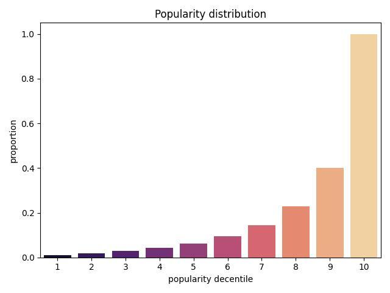
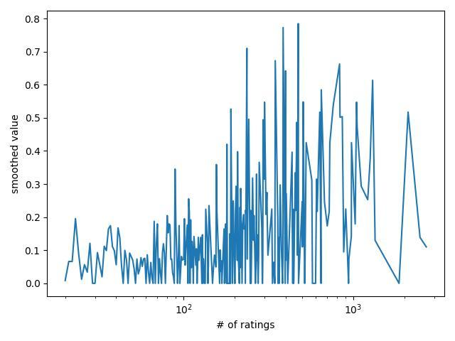

Distributions
Item Distribution
Calculates item popularity in recommendations using 10 popularity bins.
- replay.distributions.item_distribution(log, recommendations, k)
Calculate item distribution in
logandrecommendations.- Parameters
log (
Union[DataFrame,DataFrame]) – historical DataFrame used to calculate popularityrecommendations (
Union[DataFrame,DataFrame]) – model recommendationsk (
int) – length of a recommendation list
- Return type
DataFrame- Returns
DataFrame with results
You can plot the result. Here is the example for MovieLens log.
- replay.distributions.plot_item_dist(item_dist, palette='magma', col='rec_count')
Show the results of
item_distributionmethod- Parameters
item_dist (
DataFrame) –pd.DataFramepalette (
str) – colour scheme for seaborncol (
str) – column to use for a plot
- Returns
plot
User Distribution
- Metric.user_distribution(log, recommendations, ground_truth, k)
Get mean value of metric for all users with the same number of ratings.
- Parameters
log (
Union[DataFrame,DataFrame]) – history DataFrame to calculate number of ratings per userrecommendations (
Union[DataFrame,DataFrame]) – prediction DataFrameground_truth (
Union[DataFrame,DataFrame]) – test datak (
Union[Iterable[int],int]) – depth cut-off
- Return type
DataFrame- Returns
pandas DataFrame
If you plot this, you can get something like
- replay.distributions.plot_user_dist(user_dist, window=1, title='')
Plot mean metric value by the number of user ratings
- Parameters
user_dist (
DataFrame) – output ofuser_distributionmethod for a metricwindow (
int) – the number of closest values to average for smoothingtitle (
str) – plot title
- Returns
plot object